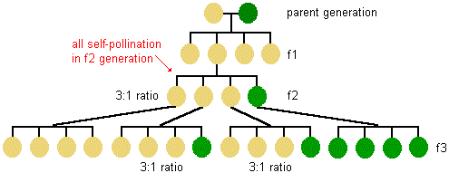

GREGOR JOHANN MENDEL
Mendel was an Autrian monk who worked in 19th century on pea plant. Mendel was educated in a monastery and went on to study science and mathematics at the University of Vienna. Failure in the examinations for a teaching certificate did not supress his zeal for scientific quest. He went back to his monastery and started growing peas and other organisms earlier, but Mendel blended his knowledge of science and mathematics and was the first one to keep count of individuals exhibiting a particular trait in each generation. This helped him to arrive at the laws of inheritance. Later, he came to be known as the "Father of Genentics".
- LAW OF DOMINANCE
- Characters are controled by discrete units called factors.
- Factors occur in pairs.
- In a dissimilar pair of factors one member of the pair dominates (dominant) the other (recessive).
- LAW OF SEGREGATION

This law is based on the fact that the alleles do not show any bending and that both the characters are recovered as such in the F2 generation though one of these is not seen at the F1 stage. Though the parents contain two alleles during gamete formation, the factors or alleles of a pair segregate from each other such that a gamete receives only one of the two factors. Of course, a homozygous parent produces all the gametes that are similar while a heterozygous one produces two kinds of gametes each having one allele with equal proportion.
LAW OF INDEPENDENT ASSORTMENT
The law states that 'when two pairs of traits are combined in a hybrid, segregation of one pair of characters is independent of the other pair of characters'.